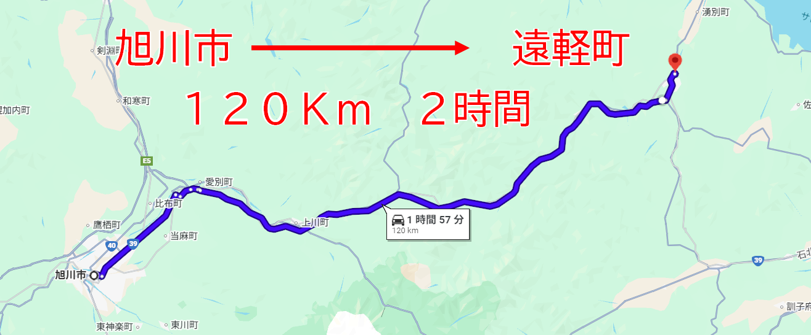

看護師が、あなたの「もう一人の家族」に
ぴたっとナース
代表：野村 由佳子（臨床経験12年 / 正看護師）
命を守るプロフェッショナル
- 臨床経験 12年
- 救急処置・医師連携
- 患者様の心のケア
しかし、私にも
救えないものがありました。
残酷な「120キロ」の壁

車で片道 2時間
親には「すぐ行くよ」と言っている。
でも、仕事がある。家庭がある。
気持ちとは裏腹に、かけつけられない
想像してください
医師の説明もよく分からず、ただ頷く親。
その横に、誰もいてあげられない現実。
静かな絶望
罪悪感
物理的な距離は変えられない。
でも、「心の距離」は変えられる。
看護師免許を持った
「もう一人の家族」
解決すべき「3つの壁」
サービスの核「医療通訳」
➡
介入
ぴたっとナース
👩⚕️
私：「先生、実は原因は
『ニシン漬け』です！」
結果：
薬は増やさず、1日1切れに制限
「心の潤い」も、守りたい
公的保険外だからできること
- 「帰りにお饅頭を買いたい」
- 「孫に写真を送りたい」
- 「綺麗な桜を見に行きたい」
私たちが代行するのは、単なる「作業」ではありません。
「叶わなかった親孝行」の代行です。
ブラックボックスを開ける
LINE画面イメージ
「血圧上昇の原因は
ニシン漬けでした」
ご家族の安心
「そうか、漬物のせいか。
電話で言ってみよう」
親子の会話が、
再びつながる。
スタンダードプラン
月額 25,000円
（月2回の通院同行・レポート込み）
高いと思いますか？
あなたが「月2回」仕事を休んだら？
自分で帰省
- 往復の交通費
- 有給休暇の消化
- 体力的な疲労
- 会社での評価ダウン
数万円以上の損失
VS
「隙間」ではなく「勝てる」市場
|
大手家事代行・警備 |
ぴたっとナース |
| 料金相場 |
時間制
3.5万円〜 /月
(交通費別・入会金あり) |
2.5万円 /月
(定額・入会金なし) |
| 対応者 |
ヘルパー・一般
(医療知識なし) |
正看護師
(医療のプロ) |
| 柔軟性 |
マニュアル通り
(寄り道不可) |
完全オーダーメイド
(わがままOK) |
高品質なのに、価格競争力がある。
ビジネスとしての堅実性
大規模な設備投資はゼロ。
月間 8名 で黒字化
私の生活費と経費は、わずか8名の契約で賄えます。
これは絶対に潰れないラインです。
地域全体で支える「共生」モデル
既存のサービスと競合するのではなく、手を取り合う関係へ
医療・介護のプロ
病院・地域連携室
ケアマネジャー
↔
ぴたっと
ナース
↔
生活・情緒のケア
「家族の領域」
（親孝行・安心）
「手が回らない隙間」を私たちが埋めることで、
地域全体のケアの質を、一段上へ。
5カ年 成長ロードマップ
Step 1：基盤構築 (1-2年目)
私一人で確実に15名まで増やす。
→ 病院連携・口コミで達成可能
Step 2：組織化 (3年目〜)
看護師増員。家族の手も借り事務効率化。
→ 潜在看護師の採用
Step 3：拡大 (5年目)
売上 1,300万円 突破。
→ 旭川モデルを確立し、全道へ
「後悔のない別れ」を増やす
「もっと話を聞いてあげればよかった」
そんな涙を、一つでも減らしたい。
親孝行の新しいスタンダードを、
ここ旭川から。
あなたの「もう一人の家族」になります。
ぴたっとナース
ご清聴ありがとうございました